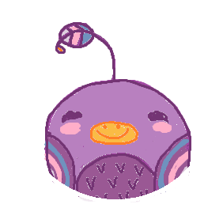

Tweedar:
The Emotional Weather Radar
very unhappy
four sd
three sd
two sd
one sd
average
one sd
two sd
three sd
four sd
very happy
Emphasize Extremes
No Emphasis
Cloud threshold
5 sd negative
4 sd negative
3 sd negative
2 sd negative
1 sd negative
median
Gradient threshold
5 sd negative
4 sd negative
3 sd negative
2 sd negative
1 sd negative
median